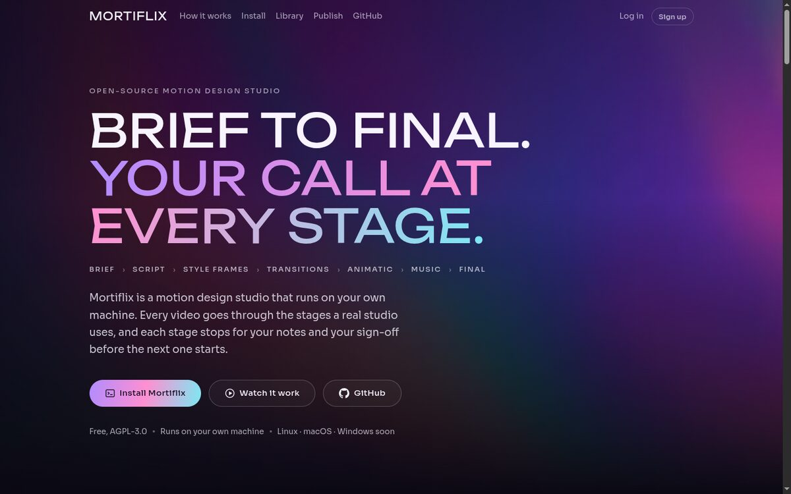
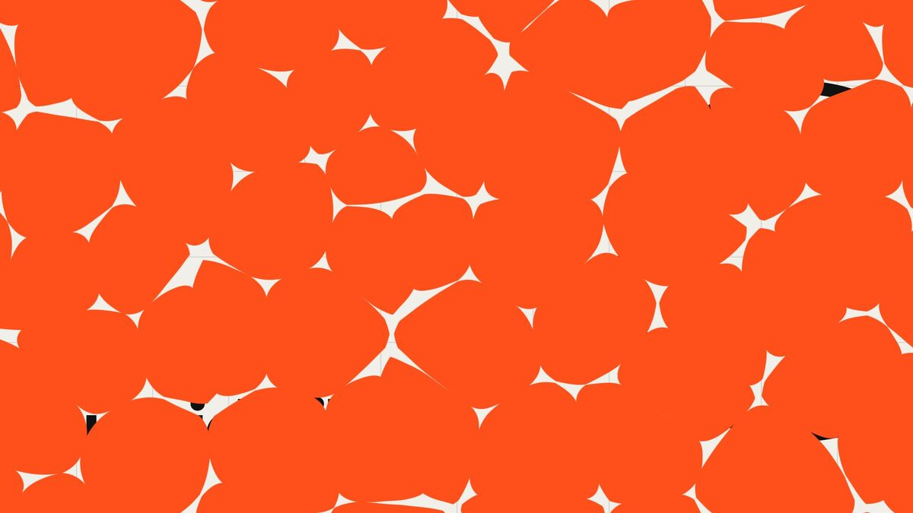
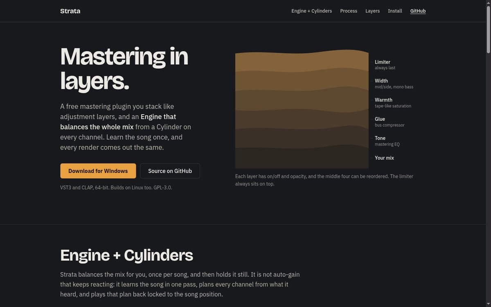
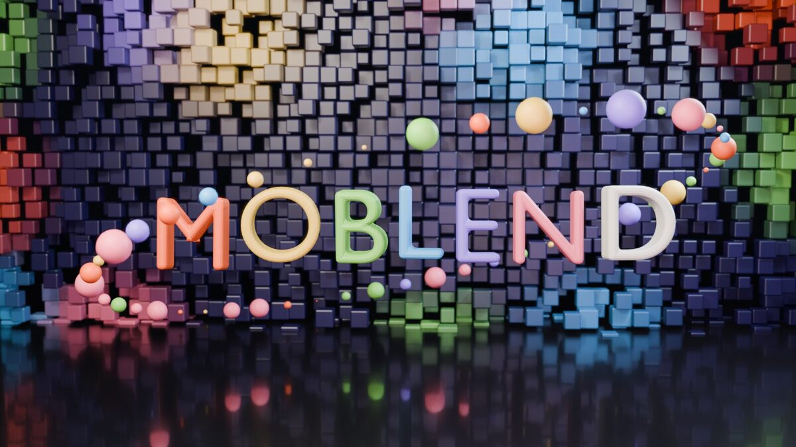
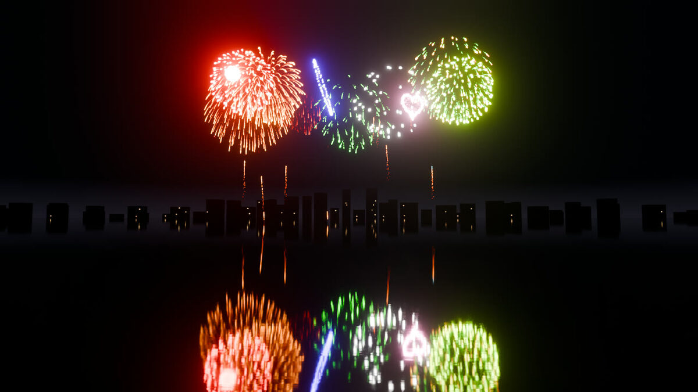
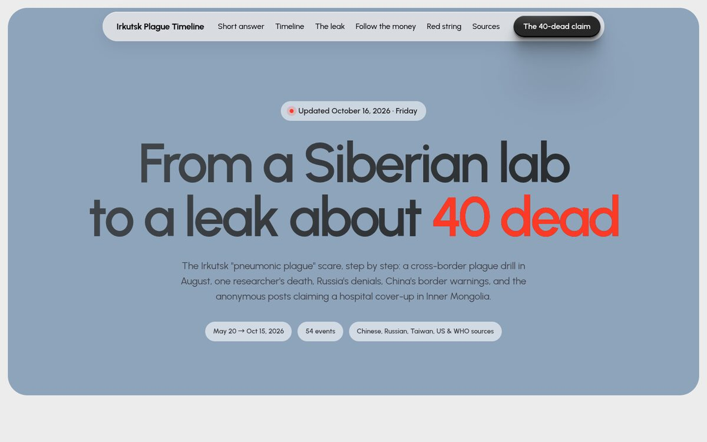
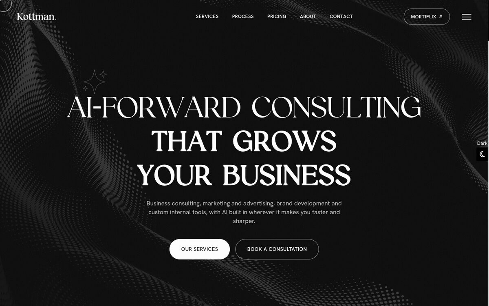

Mortiflix
A video studio that runs on your own machine. Claude makes the video step by step (brief, script, style frames, animatic, music, final) and you approve every stage before the next one starts.
Open-source creative studios, Blender add-ons, audio plugins, a game and websites. Most of it runs on your own machine, and most of it is public on GitHub.

A video studio that runs on your own machine. Claude makes the video step by step (brief, script, style frames, animatic, music, final) and you approve every stage before the next one starts.

50 motion-design transitions for Remotion, sorted by a taxonomy, with a submission protocol and a catalog for sites. Every new colour arrives through something on screen, never a bare swap.

The music sister of Mortiflix. Claude writes the music as MIDI step by step, you approve every stage, and you take MIDI packs into your own DAW.
Notes and lyrics in, a human-sounding vocal out. Record and train your own voice in the Booth, tune it, and use it from your DAW through the plugin.

Cinema 4D-style MoGraph for Blender: cloners, effectors, fields, MoText and fracture, built on Geometry Nodes, with an MCP server so AI agents can drive it too.

An optimization-first particle, fire and fireworks engine with a C/OpenMP core, sparse Navier-Stokes fire, GPU solver and ready presets.
Live Blender co-editing over Tailscale with the Multi-User add-on: a pinned installer, setup, a sync test and the design.
A bottling tycoon game. Every chapter is a new town with its own sourcing, selling and breakdowns, repaired by hand at first and later by the staff you hire.

A step-by-step timeline of the Irkutsk "pneumonic plague" scare, built from Chinese, Russian, Taiwan, US and WHO sources, with a follow-the-money view and a red-string board.

AI-forward business consulting, marketing and brand development. Self-hosted site and mail on my own server.